Mehr als ein Spielserver.
2013 fing Zombiehölle als kleiner ARMA 2 DayZ Server an. Am Anfang haben sich dort nur ein paar Leute getroffen. Mit den Jahren wurde daraus eine richtige Community.
Nach DayZ kamen Epoch, ARMA 3 und Exile. Mit jedem Projekt kamen neue Spieler dazu und es gab neue Geschichten.
Die Server sind inzwischen abgeschaltet. Was damals passiert ist, haben wir hier gesammelt. Die Seite ist das Archiv einer Community, die es seit über zehn Jahren gibt.
Community Archiv
Events und Momente
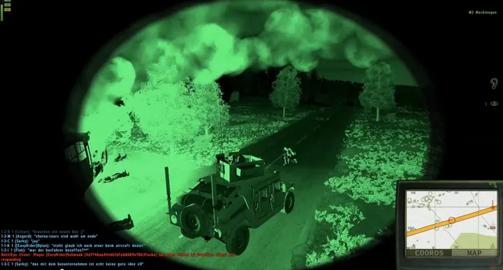
ZH-003 Das Convoy-Event Gemeinsam durch Chernarus.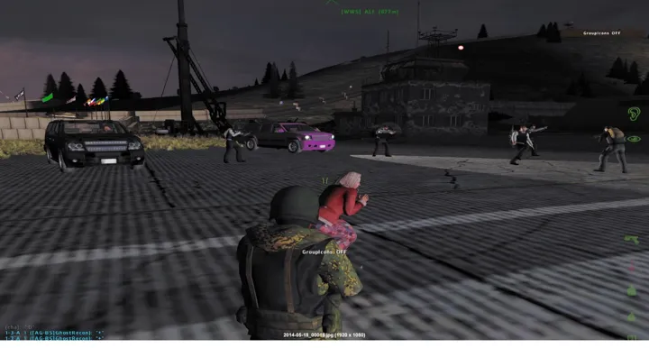
ZH-004 Der Helikopter-Wettbewerb Hoch über Chernarus.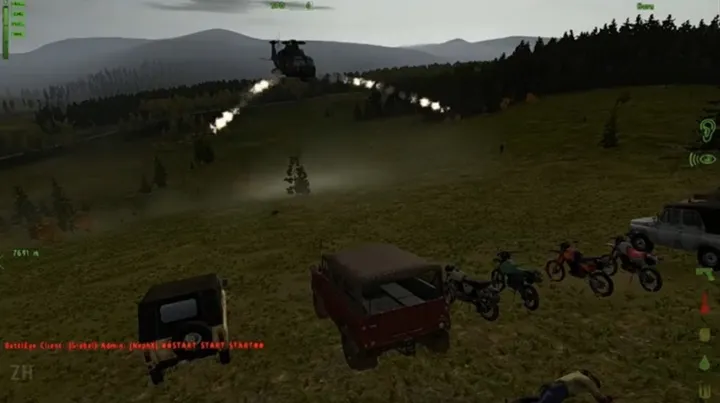
ZH-005 Die Rallye Die Rallye durch Chernarus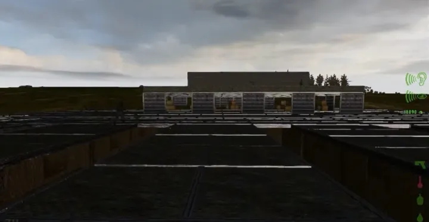
ZH-006 Hunger-Games Event Ein Kampf ums Überleben. Video ansehen ZH-007 Team Deathmatch Event Ein neues Kapitel.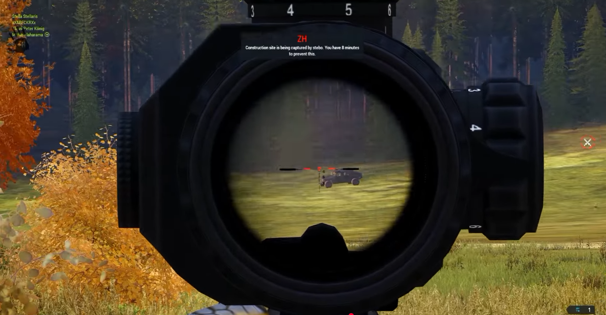
ZH-008 Creator Besuch Ein Besuch auf unserem Server.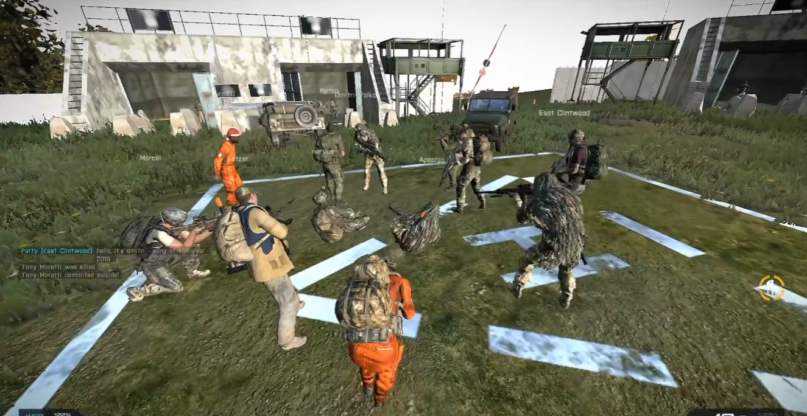
ZH-009 Musik in der Safezone Spontane Momente abseits des Spiels.Die Adminbase
ARMA 2 DayZ · Chernarus · 2013
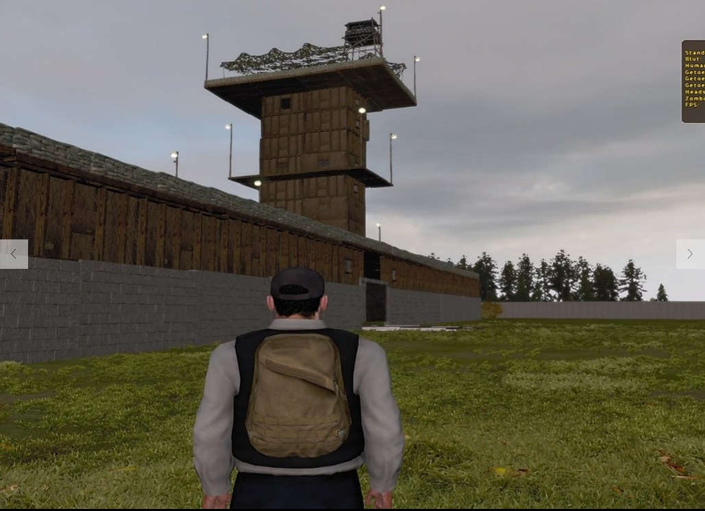
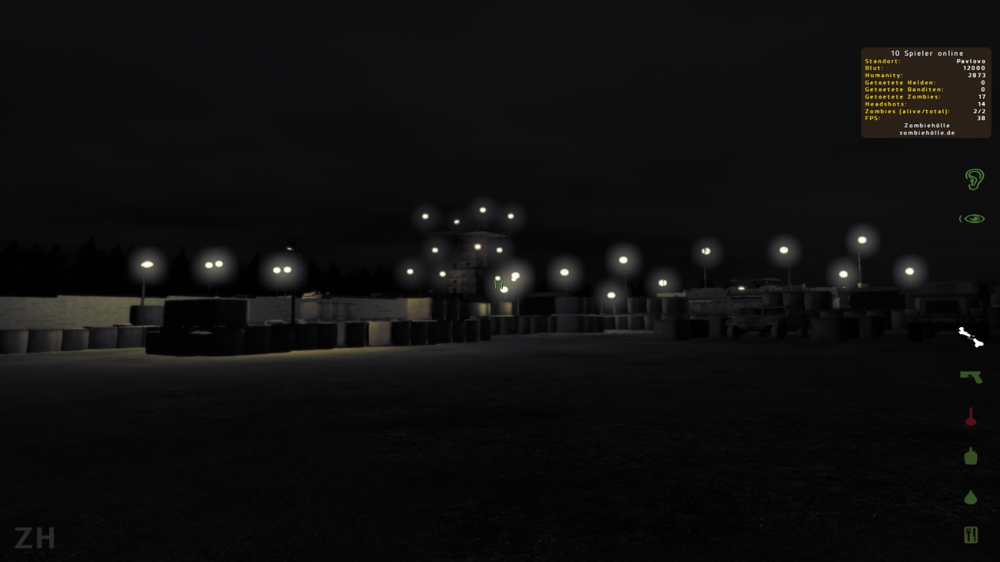
Der alte Hauptstützpunkt.
Die Adminbase war der Mittelpunkt des DayZ-Servers. Hier haben wir Stein auf Stein gebaut, Events vorbereitet oder einfach nächtelang abgehangen und gequatscht.
Das Axt-Event
ARMA 2 DAYZ · Zombiehölle
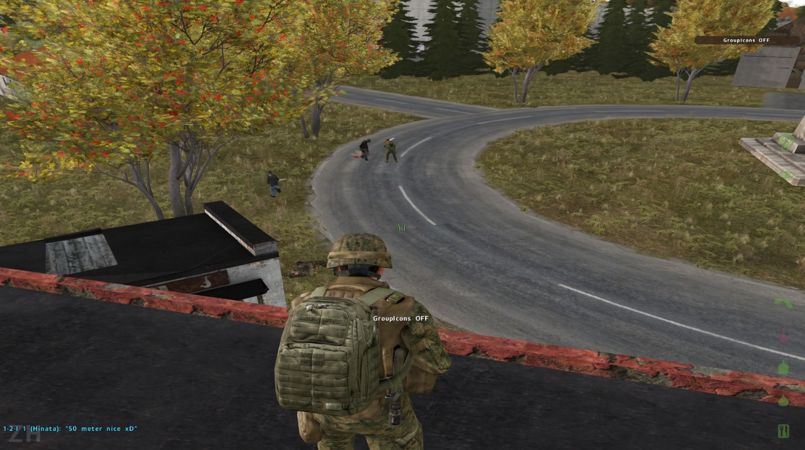
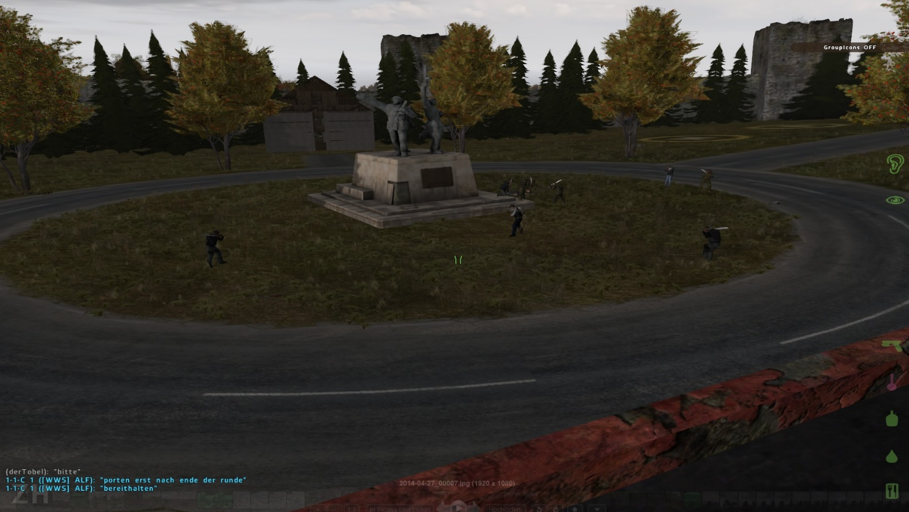
Eine Axt. Keine Vorteile.
Manche Events brauchten keine komplizierten Regeln. Beim Axt-Event bekam jeder Spieler die gleiche Ausrüstung: eine einzige Axt.
Keine Schusswaffen, keine Fahrzeuge. Wer am Ende noch stand, hatte gewonnen.
Das Convoy-Event
ARMA 2 DAYZ · Zombiehölle
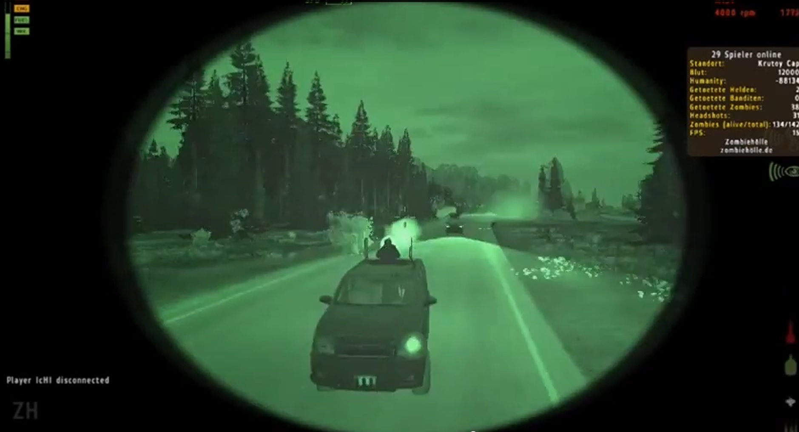
Gemeinsam durch Chernarus.
Beim Convoy-Event sind mehrere Spieler zusammen mit Fahrzeugen durch Chernarus gefahren. Dabei kam es vor allem auf Planung und Absprache an.
▶ Video ansehenDer Helikopter-Wettbewerb
ARMA 2 DAYZ · Zombiehölle
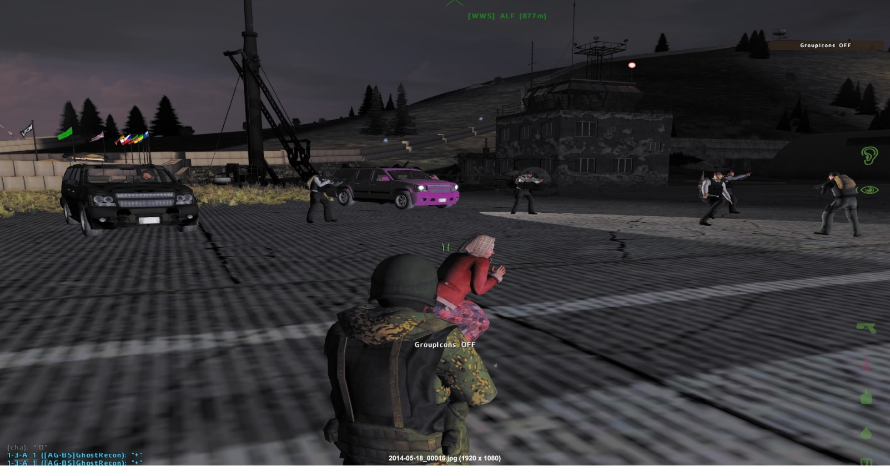
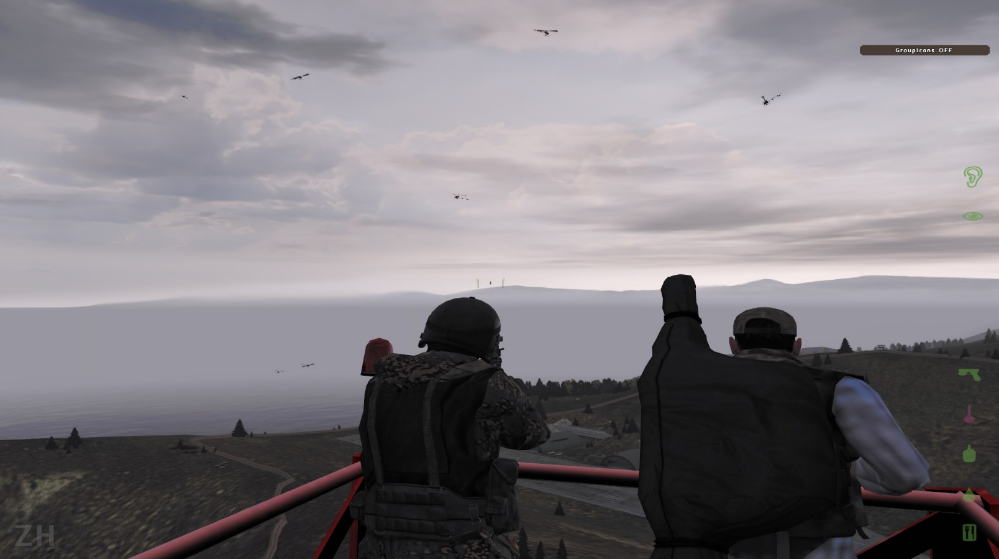
Hoch über Chernarus.
Mehrere Hubschrauber waren gleichzeitig in der Luft. Wer die anderen abdrängte oder abschoss und als Letzter noch flog, hatte gewonnen.
Die Rallye
ARMA 2 DAYZ · Zombiehölle
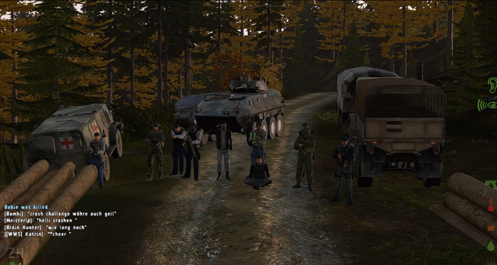
Die Rallye durch Chernarus
Die Spieler mussten eine festgelegte Strecke durch Chernarus fahren. Unterwegs warteten selbst gebaute Hindernisse.
Hunger-Games Event
ARMA 2 DAYZ · Zombiehölle
Ein Kampf ums Überleben.
Ein besonderes Community-Event mit eigener Arena.
Jeder gegen jeden, bis nur noch einer übrig war.
▶ Video ansehenTeam Deathmatch Event
ARMA 3 · EXILE
Ein neues Kapitel.
Mit ARMA 3 Exile ging es für die Community weiter.
Neben dem normalen Spiel gab es eigene Events wie das Team Deathmatch.
Dort haben Teams in einem eigenen Spielmodus gegeneinander gespielt.
▶ Video ansehenCreator Besuch
ARMA 3 · EXILE
Ein Besuch auf unserem Server.
Ab und zu verirrte sich auch der ein oder andere Streamer auf unseren Server.
Einer dieser Besuche war von Moondye7 während der ARMA 3 Exile Zeit.
▶ Video ansehenMusik in der Safezone
Ein besonderer Community-Moment
Spontane Momente abseits des Spiels.
Manches ist einfach nebenbei passiert.
Einmal hat ein Musiker in der Safezone spontan ein Lied gespielt, und die Spieler haben sich drumherum versammelt.
▶ Video ansehenDie Welten der Zombiehölle
Verschiedene Karten aus der ARMA 3 Exile Zeit.
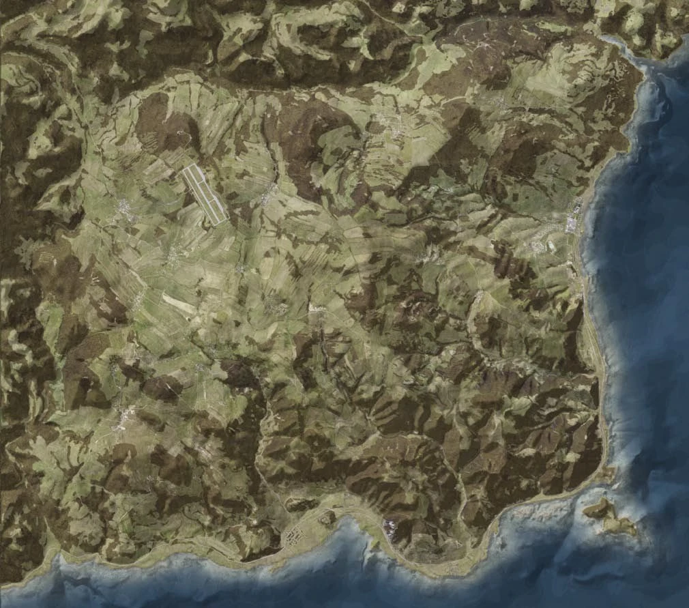
Chernarus
Eine der bekannten Karten aus der Zombiehölle-Zeit.
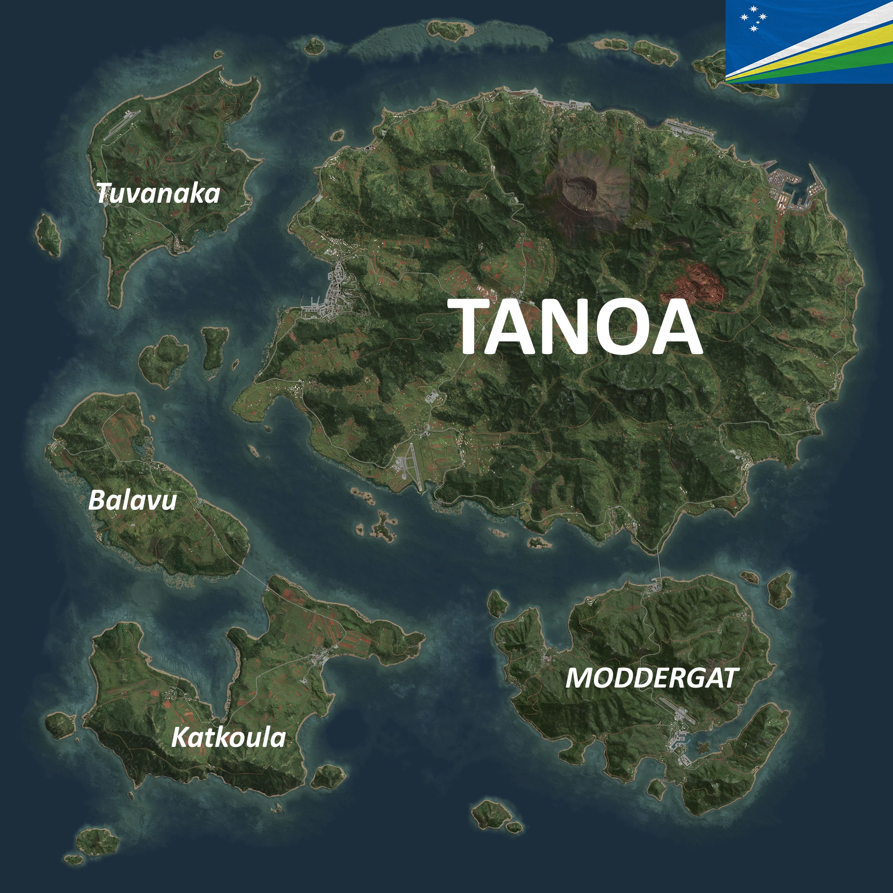
Tanoa
Eine weitere Welt während der ARMA 3 Exile Zeit.
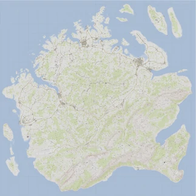
Napf
Eine weitere Karte aus der Exile-Zeit.
Der Weg von 2013 bis heute
Der erste Server
Der erste ARMA 2 DayZ Server geht auf Chernarus online und füllt sich schnell mit den ersten Stammspielern.
DayZ Epoch & Events
Basenbau wird durch DayZ Epoch zum großen Thema und die Adminbase wird zum zentralen Treffpunkt für Events.
ARMA 2 DayZ Epoch
Mit ARMA 2 DayZ Epoch und weiteren Erweiterungen kommt mehr Abwechslung auf die Server.
Wechsel auf ARMA 3
Der Umstieg auf die neue Engine. Der Server startet mit der Exile-Mod auf ARMA 3.
Archiv & 3D-Entwicklung
Die alten ARMA-Server sind Geschichte, das Archiv bleibt online. Zombiehölle Survival wird inzwischen als 3D-Multiplayer-Survival-Welt weiterentwickelt.
AN ALLE, DIE DABEI WAREN.
Seit 2013 haben viele Spieler, Helfer und Freunde die Zombiehölle (ZHServer) mitgeprägt.
Danke für die Zeit, die ihr reingesteckt habt, und für alles, was wir zusammen erlebt haben.
SEIT 2013 · ZOMBIEHÖLLE (ZHSERVER)
Hinterlasse eine Erinnerung.
Du warst damals dabei? Schreib einen Gruß oder eine Erinnerung ins Gästebuch.
Eintrag schreiben
Neue Einträge schauen wir uns vorher kurz an, dann werden sie freigeschaltet.
Merch und Unterstützung
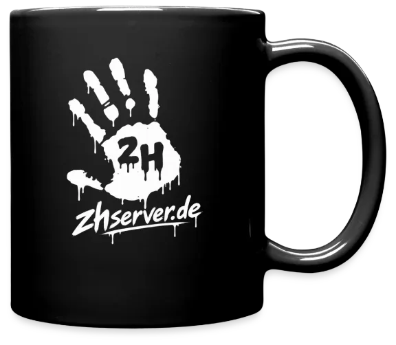
Shop ZHServer Merch Der Merchandise-Shop ist kein Geschäftsmodell und ich verdiene daran nichts. Ich freue mich einfach, wenn du ein Stück Zombiehölle bei dir hast. Zum ZHServer Shop Spenden Projekt unterstützen Wenn du freiwillig etwas gibst, hilft das, das Archiv online zu halten und Hosting und Entwicklung des Spiels zu bezahlen. Freiwillig über PayPal unterstützenIn Verbindung bleiben
Die alten Community-Kanäle bleiben offen, falls du vorbeischauen oder in Verbindung bleiben möchtest.